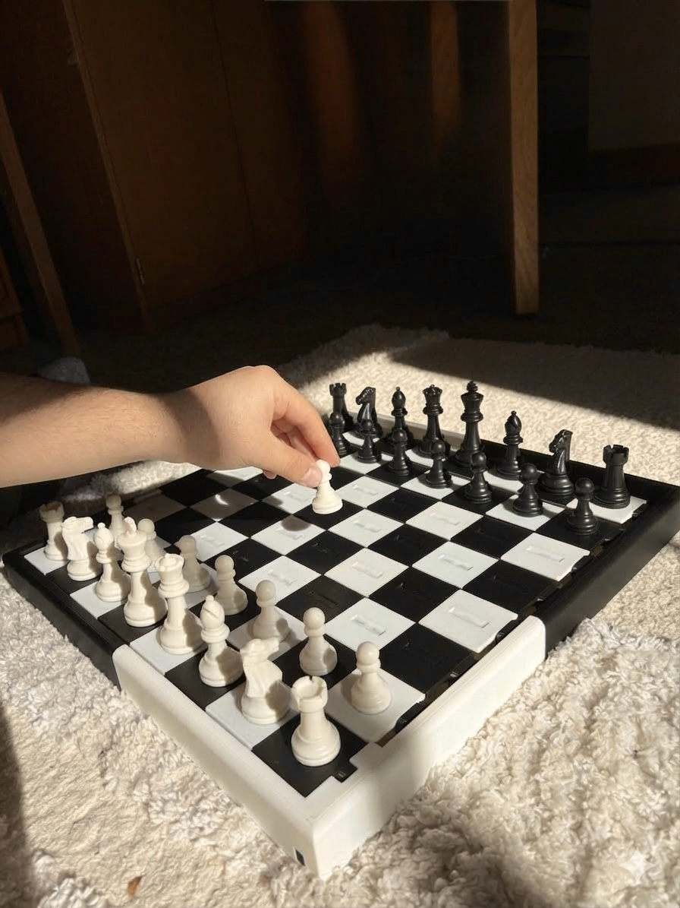
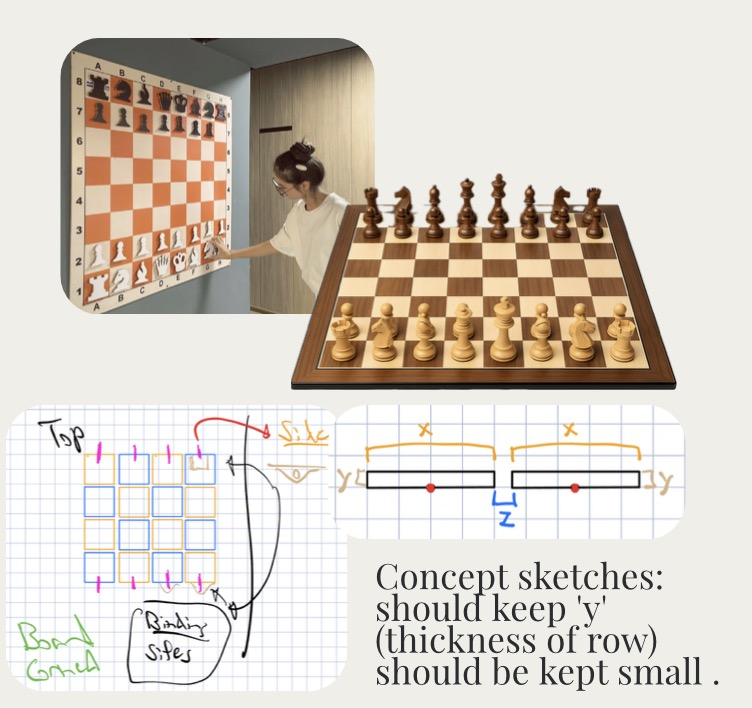
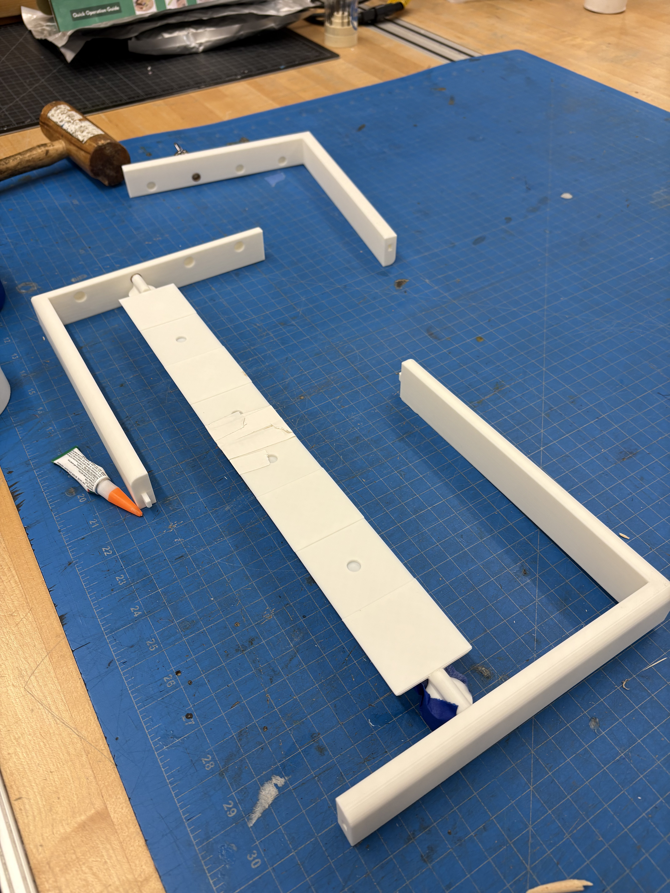
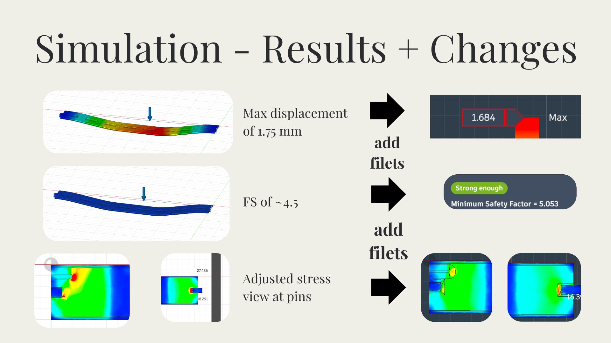
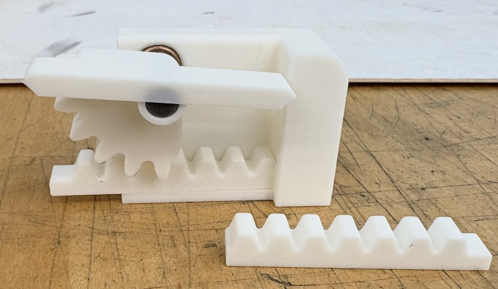
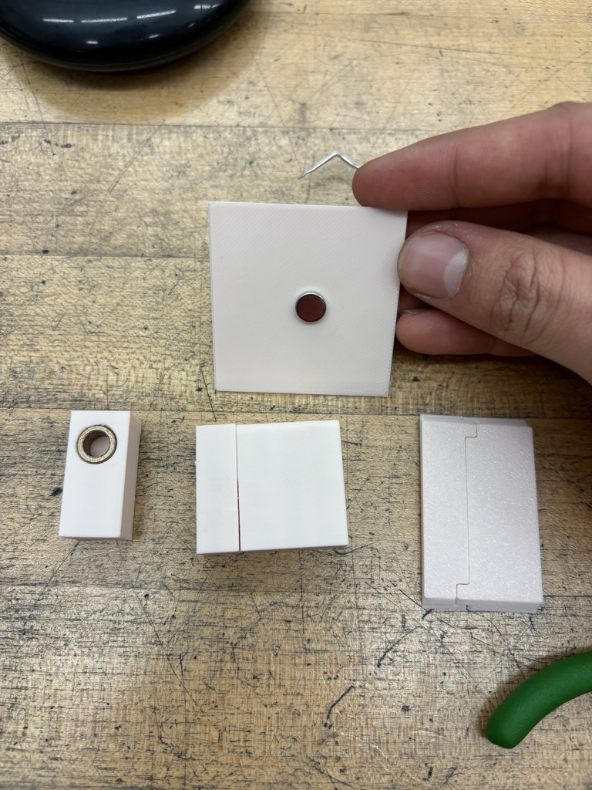
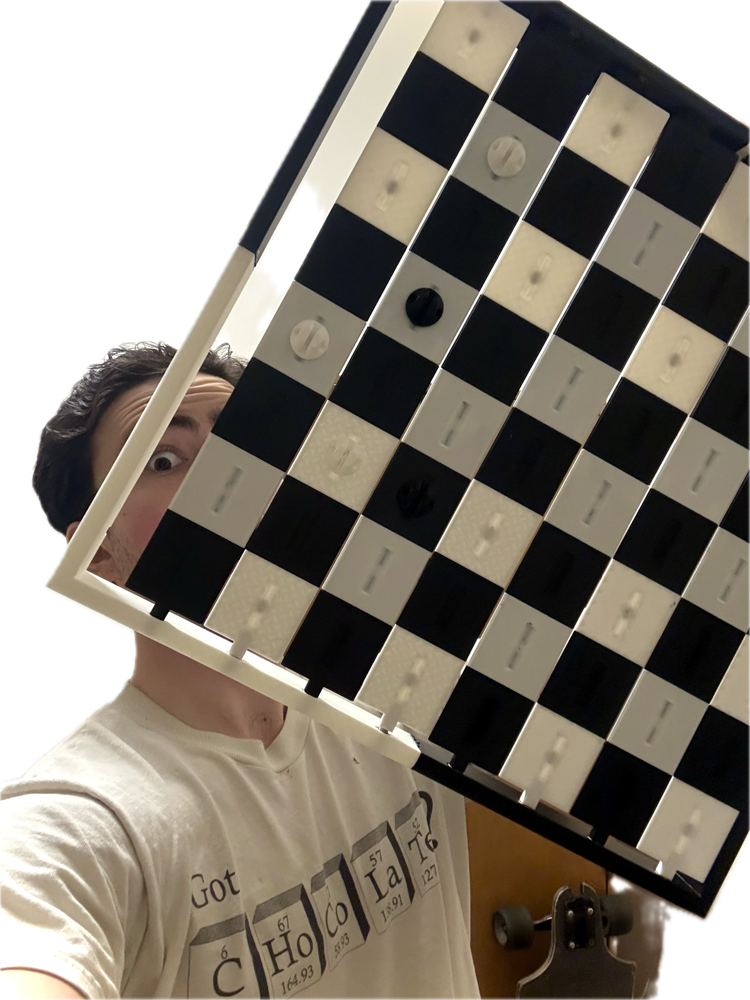

Poser Chess Set
A Wall-Mounted Chess Set, Made to Show Off Your Game


Sebastian Esteva — ME 227, Winter 2026
A wall-mounted chess set where every piece poses itself — sliding out from a flat magnetic backing into a fully three-dimensional chess piece. The set is functional to actually play with, but also designed to be displayed proudly on a wall between games.
The biggest design challenge was scale: the full board needed to be roughly 20 inches by 20 inches, which was too large for a single print bed. That meant breaking the entire board and every piece into printable sections, then reassembling them with 96 embedded magnets to keep everything correctly oriented and connected.
The Journey
Ideation → Prototyping → Execution
Ideation
Early sketches and concept exploration — figuring out how a flat, wall-mounted panel could fold and slide out into a fully three-dimensional chess piece, before committing to any physical prototype.

Prototyping
Testing every connector, hinge, and mechanism individually before committing to a full print run — a single point of failure at this scale would be costly to redo.




Execute
All 46 individual pieces were tracked and printed, then assembled using 96 embedded magnets to keep every piece correctly oriented when posed out from the wall.
